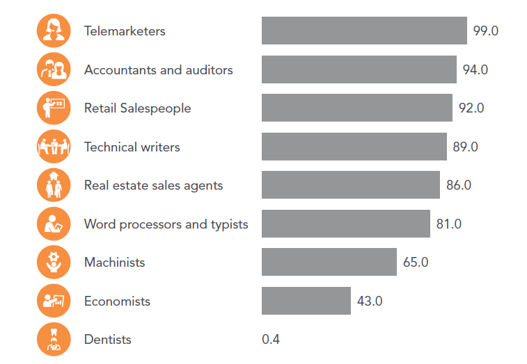
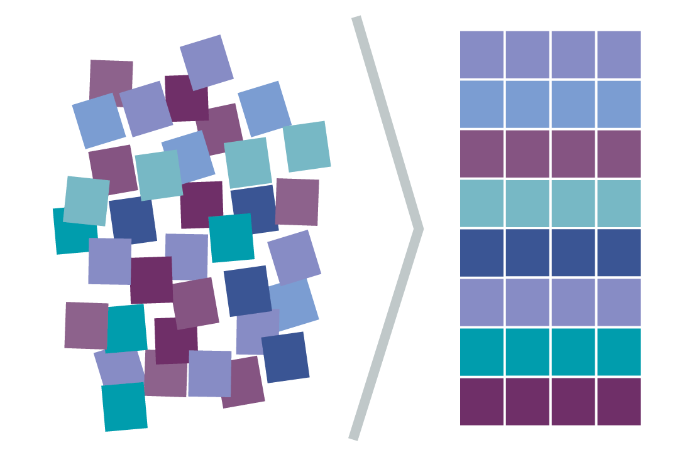
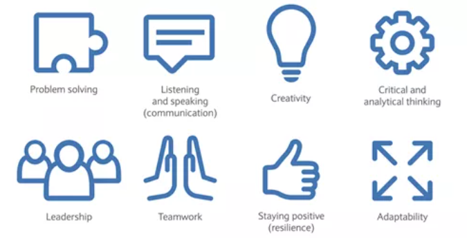

- Problem solving and critical thinking: We use it when we want to “reduce the barrier between a given state and an intended goal state with the help of cognitive activities and behaviour” [Source def].
- Social skills: Social skills consist of the way you communicate and work with others collegues, as well as the leadership skills that you possess.
- Cognitive skills: Skills such as mathematics that require you to be able to manipulate information and acquire knowledge.
- Creativity: With the continuous advancement of technology, creativity will be a dominant skill that will be required for anyone who wishes to succeed in the market competing with a vast number of people in every part of the new technology that is being implemented.
Implication on future and past jobs
Since the first industrial revolution occurred back in the 18th century, there were a number of jobs that declined but also some others that were created. This trend kept happening whenever a big revolution was happening. For instance, when the 3rd Industrial revolution took place, typists and telephone operators were some of the jobs that declined due to the advance of technology. However, there was also a bigger need for people that had experience in the scientific field and for complex problems that needed to be addressed. Some examples of that are computer engineers, software developers etc.
This is expected to also happen with the industrial revolution that we currently live in, where many jobs may be eliminated in the future, while some others may emerge to take their place.
One thing that can be said without hesitation is that the 4th Industrial revolution will shape up the way that societies operate, as well as the way that we interpret jobs and buissnesses[3].
Will the fourth Industrial revolution lead to the elimination of many jobs in the future?
A study was made by Brynjolfsson and McAfee (source 2 p2) which pointed out a key difference that distincts the 4th Industrial revolution compared to the previous ones. That difference was the fact that with the use of the technology at our times, we no longer aim to replace the tools that humans use to make their work environment and conditions much easier, but to use it to actually replace the human force itself.
There have been a number of studies which suggest that many jobs may go extinct in the upcoming years. One of them was made by Frey and Osborne in 2013 that showed a number of jobs that are likely to face extinction in the near future[2].

Figure 7: Results of the study of Frey and Osborne
×

It is important to note however, that such claims were later on criticised by a number of people. One of the reasons that this study was denounced was about the fact that during the previous revolutions there was also concern and worries about potential extinction of future jobs. These concerns however as shown by history were not materialised to the degree that people were afraid of. There were indeed certain jobs that were reduced over the passing of the following years but it was much lower than everyone expected[3].
One of the main reasons that this happened was because people underestimated and did not take into consideration the new jobs and new opportunities that would occur during the next revolutions.
Another reason that people showed criticism towards the research that was made by Frey and Osborne was related to the separation of tasks that are needed to be completed in order to be combined to a general one. It was suggested that a job may consist of a number of tasks, some of which may not be necessarily automated, thus reducing the danger of eliminating entire occupations in the future .

There are a number of factors that we need to take into consideration in order to come up with an estimation about which jobs can be automated. Some of these factors are:[2]
- The cost that is going to be needed in order to have the robots/computers replace the human force
- The benefits that will occur by robots succeeding humans
- The ethical dilemmas and the social consequences that will take place
In conclusion, there are a number of factors that can determine the level to which automation will take over certain jobs in the future. Thus, it is really hard to estimate exactly what the degree of unemployment will be like in the next decades. However, it is important to point out that there are indeed serious concerns about a number of occupations that are gonna go extinct in the future as well as a significant amount of fear about the levels of unemployment that will occur if certain occupations are indeed replaced by automation.
Will new jobs be created with the fourth industrial revolution?
It is expected that over the passing of the next few years a number of jobs will be created that do not even exist today. There was a study made by WEF in 2016 [Source1 p25] which showed that 65% of children that were currently working in an elementary school would end up finding jobs that in our current time do not exist yet.
We may first think that this sounds weird, but if we think about it 10-15 years ago a number of jobs also did not exist at the time. Jobs such as an app developer or a social media manager did not exist back in the 2000s but now see an amazing growth over the last 5 years. This will also be the case in the next decades where new positions and opportunities will arise for those who are currently still at schools or for those who wish to transition from their previous occupations to the new ones that the 4th Industrial revolution will bring.
Some of the jobs that are expected to be more popular in the upcoming years are virtual Reality experience designer, remote health care specialist etc.
What are the skills that will be required for the future jobs?
With the continuous advancement of technology over the last years as well as the future potential of an even bigger epxansion in automation, it is expected that many of our existing skills and expertise will be required to be relearned or upgraded. This was not the same with the previous industrial revolutions as it is now where people need to be constantly up-to-date with the current evolution of technology which is changing constantly[2].
There are a number of skills that are required for a person to be able to take part in this new era of technology. The more essential ones are:

Figure 9: Skills required for future jobs[9]